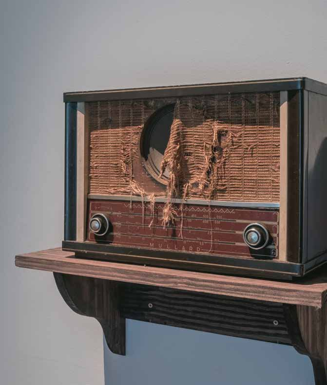

Radionovelas
Use fones de ouvido
Rádios antigos que reproduzem gravações ficcionais. Apresentados na exposição Sonar, Casa de Cultura Laura Alvim, 2013.
- Materiais
- Rádios antigos e gravações ficcionais
- Local
- Casa de Cultura Laura Alvim, na exposição Sonar
- Coleção
- Coleção Sérgio Carvalho
- Exposição
- Sonar (2013)
- Exposição coletiva
- Brasilidade Pós-Modernismo 1922–2022 (2021–2022)

